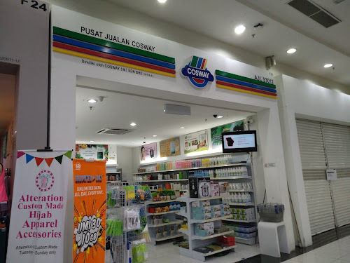

I'm Syima!
Welcome to my world..
Hello there. Welcome to my personal webpage. This is my first web page that I ever create.So let's check it out...
About me
My Biodata
- Name : Nazhatulsyima Bt Abd Aziz
- D.O.B : 28th January
- Origin Country : Kuala Lumpur, Malaysia
- Address : Kanazawaku, Yokohama-shi, Japan
Background
In my early years, I lived in a small town called Taman Melawati nearby Kuala Lumpur, Malaysia. My family is a simple and middle-class working family where my mother is a housewife and my father is a banking officer. I have 2 little sisters and 2 little brothers. In 2010, I got married and now I have a lovely family with 4 kids. Currently, we are settling down in Yokohama, Japan. In my free time, I love to watch Netflix and read fictional novels books
Education
My early education starts by entering a kindergarten nearby my house. Later, I continued my school years at Taman Melawati elementary school and Taman Melawati High School. I manage to get a good result to further my study. After I finished high school, I continue my study at Malacca Matriculation College for my university foundation program.
Next, I pursue my study at Malaysia Northern University (UUM). I spend there 4 years to earn my bachelor degree and I passed it with flying colors. After 10 years focusing to my family, I decided to continue my study. So, in April 2022 I enrolled to KCGI.
With a hectic schedule as a mom and student, I do feel stressed and down sometimes.
However, I have always been inspired by Martin Luther King Jr : If you can't fly, then run, if you can't run then walk, if you can't walk, then crawl, but whatever you do, you have to keep moving forward.
Working Experince
| Ireka Soft Sdn Bhd |
| I worked at Ireka Soft Sdn Bhd between June 2013 till Dec 2014. Ireka Soft is an animation and apps design company. I'm in charge as their human resources and finance officer. Through this company, I have been exposed to the IT environment. I also had been send by Ireka Sdn Bhd to attend CeBIT 2014 in Hannover, Germany. CeBIt is the world's largest IT conference. It was a great opportunity and experience for me to attend such a big event. |
|  | Cosway (M) Sdn Bhd |
| In May 2010, I worked as an outlet operation manager at one of Cosway outlets in Puchong, Malaysia. As operation manager, my job was to handle stock operation, train staff, and at the same time do sales for the outlet. It is my first experience involved in the retailing industry. Quite a challenging job because I need to handle all the operations in the outlet. However, through this experience, I managed to build up my self-esteem as well as my sales skill. |
| German-Malaysian Institute (GMI) |
| My first proper job was with German-Malaysian Institute. I worked as a clerk in their German Preparation Program department. My job scope was to help and guide the A-Level student in their preparation for German. I loved to work at GMI because I enjoy working in an educational environment. Here I have been exposed to basic information about the Germany University system. Not only that, sometimes I have to handle and help other staff in my department such as preparing the chemistry lab tools or helping the teacher monitor the exam. |
Contact me
Feel free to contact me if you have any feedback regarding this website or maybe you want to add me as a friend. Please ring me at any of the platform below..Chiow~
Or, you can drop me an email : syima_aziz@outlook.com.